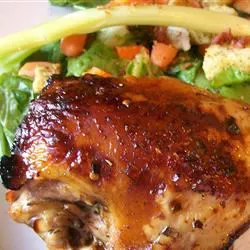

Odin Recipes
Home

Balsamic Marinated Chicken Breasts
This is a recipe I made up after eating LOADS of bland chicken breasts. Chicken is so easy to prepare and this recipe makes the meat extra tender and juicy.
Recipe
- ¾ cup balsamic vinegar
- ½ cup water
- 1 teaspoon dried minced onion
- ½ teaspoon crushed red pepper flakes
- ½ teaspoon dried minced garlic
- ¼ teaspoon salt
- ¼ teaspoon ground black pepper
- ¼ teaspoon paprika
- ¼ teaspoon crushed dried rosemary
- ¼ teaspoon dried parsley flakes
- ¼ teaspoon chili powder
- ⅛ teaspoon dried oregano
- 4 (6 ounce) skinless, boneless chicken breast halves
Steps
- Whisk together the balsamic vinegar, water, onion, red pepper flakes, garlic, salt, pepper, paprika, rosemary, parsley, chili powder, and oregano in a bowl, and pour into a resealable plastic bag. Add the chicken breasts, coat with the marinade, squeeze out excess air, and seal the bag. Marinate in the refrigerator 30 minutes to overnight.
- Preheat oven to 400 degrees F (200 degrees C). Line a baking sheet with aluminum foil, or lightly grease a broiler pan. Remove the chicken breasts from the marinade, and shake off excess. Discard the remaining marinade, and place the chicken breasts onto the baking sheet.
- Bake in the preheated oven until the chicken breasts are golden brown and no longer pink in the center, 30 to 40 minutes. An instant-read thermometer inserted into the center should reach 165 degrees F (74 degrees C).